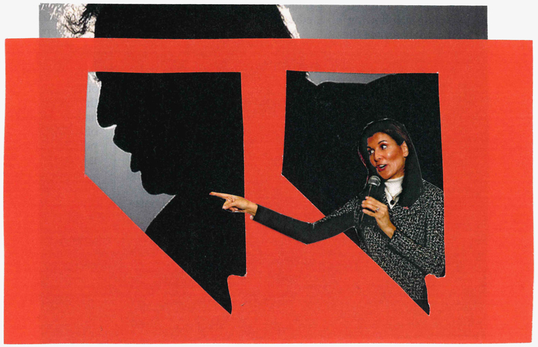
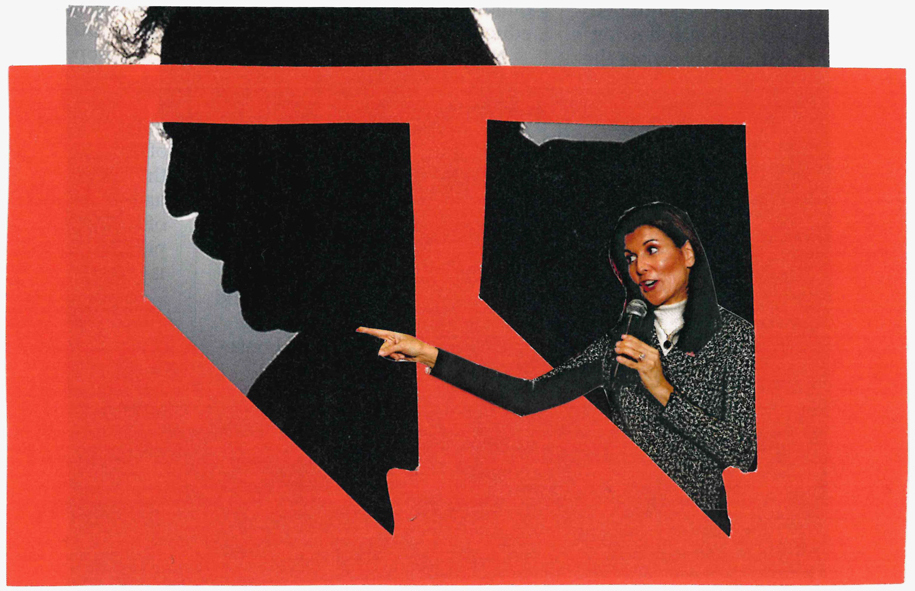

MARCUS PEABODY is the Creative Director & head of visuals at the
Guardian US, with previous stints at the Wall Street Journal, New York Magazine, and the New York Times.
¶ He oversees editorial design, art direction, photography, and news graphics, in addition to working on editorial product and branding projects.
¶ He studied at the Glasgow School of Art and the Rhode Island School of Design, and teaches occasionally.
 
